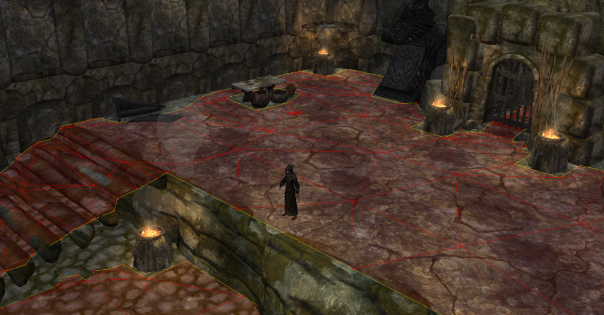
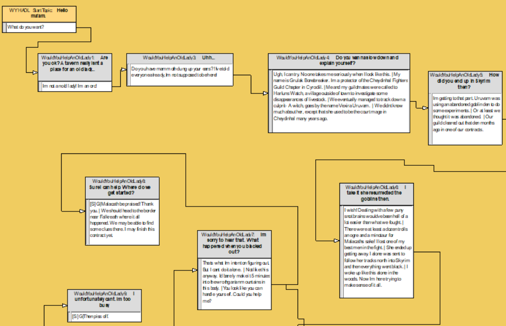

Would You Help an Old Lady? - Skyrim SE Quest Mod
Skyrim SE Creation Kit, Papyrus
A mod for Skyrim Special Edition that adds a custom made quest to the game involving the rescue of an old woman afflicted by a curse. Developed over the course of a few months as a hobby project by myself, the quest was written and voice acted entirely by me.
The highlights of my work on this project include my narrative design in writing the quest, familiarizing myself with AAA development and level design tools, and being able to program quest encounters in Papyrus (Bethesda's proprietary scripting language). This mod also stands as one of my most popular projects, accruing 1500+ downloads with more coming each passing day.
- Environment Design and Navmeshing:
For the quest, I had to edit the existing landscape of the world space for exterior structures, and create my own my own cells for interior rooms. With this came a myriad of challenges, specifically dealing with environmental design and how I could make natural looking structures that fit into the purview of the original game. Furthermore, I needed to follow up any environmental changes with the creation of a navmesh for the AI pathfinding in the game. The creation kit did offer tools for generating a navmesh, but was somewhat limited in creating one with no gaps or overlapping parts. Thus, a lot of the navmeshing was done by hand.

- Narrative Design:
The creation kit offered a lot of tools for branching dialogue and quest events, so it was a lot of fun to play around with creating my own story. It wasn't too narratively complex, but the plot was interesting enough to foreshadow an adventure and get players interested in helping out the protagonist. I overall thought it turned out great and certainly want to develop my skills more as a writer.

.png)
.png)
.png)